A "marginal effect" is the partial derivative of the regression equation
with respect to a variable in the model. This function uses automatic
differentiation to compute marginal effects for a vast array of models,
including non-linear models with transformations (e.g., polynomials). The
list of supported models and of models whose numerical results have been
validated against external software (Stata or margins) is held in the
supported_models dataset which accompanies this package.
marginaleffects(
model,
newdata = NULL,
variables = NULL,
vcov = TRUE,
type = "response",
...
)Model object
A dataset over which to compute marginal effects. NULL uses
the original data used to fit the model.
Variables to consider (character vector). NULL
calculates marginal effects for all terms in the model object.
Matrix or boolean
FALSE: does not compute unit-level standard errors.
TRUE: computes unit-level standard errors using the default vcov(model) variance-covariance matrix.
Named square matrix: computes standard errors with a user-supplied variance-covariance matrix. This matrix must be square and have dimensions equal to the number of coefficients in get_coef(model).
Type(s) of prediction as string or vector This can differ based on the model type, but will typically be a string such as: "response", "link", "probs", or "zero".
Additional arguments are pushed forward to predict().
A data.frame of marginal effect estimates with one row per observation per marginal effect.
mod <- glm(am ~ hp * wt, data = mtcars, family = binomial)
mfx <- marginaleffects(mod)
summary(mfx)
#> Average marginal effects
#> type Term Effect Std. Error z value Pr(>|z|) 2.5 % 97.5 %
#> 1 response hp 0.002654 0.001941 1.367 0.17158 -0.001151 0.006458
#> 2 response wt -0.435727 0.102024 -4.271 1.9474e-05 -0.635690 -0.235764
#>
#> Model type: glm
#> Prediction type: response
tidy(mfx)
#> type term estimate std.error statistic p.value conf.low
#> 1 response hp 0.002653558 0.001940937 1.367153 1.715775e-01 -0.00115061
#> 2 response wt -0.435726799 0.102023796 -4.270835 1.947425e-05 -0.63568977
#> conf.high
#> 1 0.006457725
#> 2 -0.235763833
head(mfx)
#> rowid type term dydx std.error am hp wt
#> 1 1 response hp 0.0069892293 0.0058823494 1 110 2.620
#> 2 2 response hp 0.0164031413 0.0133879375 1 110 2.875
#> 3 3 response hp 0.0028317695 0.0037551909 1 93 2.320
#> 4 4 response hp 0.0019335745 0.0024498352 0 110 3.215
#> 5 5 response hp 0.0029913468 0.0033764304 0 175 3.440
#> 6 6 response hp 0.0001475603 0.0003451131 0 105 3.460
plot(mfx)

# typical marginal effects
marginaleffects(mod, newdata = datagrid(hp = c(100, 110)))
#> rowid type term dydx std.error wt hp
#> 1 1 response hp 0.001165863 0.001753306 3.21725 100
#> 2 2 response hp 0.001894129 0.002415076 3.21725 110
#> 3 1 response wt -0.194911082 0.307492808 3.21725 100
#> 4 2 response wt -0.331939457 0.436422720 3.21725 110
# counterfactual average marginal effects
marginaleffects(mod, newdata = datagrid(hp = c(100, 110), grid.type = "counterfactual"))
#> rowid type term dydx std.error rowid_original wt hp
#> 1 1 response hp 1.204245e-02 9.995994e-03 1 2.620 100
#> 2 2 response hp 1.415558e-02 1.080248e-02 2 2.875 100
#> 3 3 response hp 1.566074e-03 2.204571e-03 3 2.320 100
#> 4 4 response hp 1.189815e-03 1.779620e-03 4 3.215 100
#> 5 5 response hp 1.453976e-04 3.409128e-04 5 3.440 100
#> 6 6 response hp 1.200600e-04 2.909609e-04 6 3.460 100
#> 7 7 response hp 4.145963e-05 1.189714e-04 7 3.570 100
#> 8 8 response hp 1.489280e-03 2.093504e-03 8 3.190 100
#> 9 9 response hp 2.119011e-03 2.680346e-03 9 3.150 100
#> 10 10 response hp 1.453976e-04 3.409128e-04 10 3.440 100
#> 11 11 response hp 1.453976e-04 3.409128e-04 11 3.440 100
#> 12 12 response hp 2.415339e-07 1.361964e-06 12 4.070 100
#> 13 13 response hp 8.548397e-06 3.053517e-05 13 3.730 100
#> 14 14 response hp 5.170044e-06 1.970122e-05 14 3.780 100
#> 15 15 response hp -1.862539e-11 1.590175e-10 15 5.250 100
#> 16 16 response hp -5.054491e-12 4.636245e-11 16 5.424 100
#> 17 17 response hp -9.182237e-12 8.154875e-11 17 5.345 100
#> 18 18 response hp 6.006465e-04 1.053596e-03 18 2.200 100
#> 19 19 response hp 4.902651e-06 1.789468e-05 19 1.615 100
#> 20 20 response hp 3.021851e-05 8.798615e-05 20 1.835 100
#> 21 21 response hp 4.677862e-03 4.884891e-03 21 2.465 100
#> 22 22 response hp 6.736539e-05 1.794532e-04 22 3.520 100
#> 23 23 response hp 1.525131e-04 3.546083e-04 23 3.435 100
#> 24 24 response hp 2.806815e-06 1.154864e-05 24 3.840 100
#> 25 25 response hp 2.666431e-06 1.104133e-05 25 3.845 100
#> 26 26 response hp 6.887674e-05 1.779961e-04 26 1.935 100
#> 27 27 response hp 3.692031e-04 7.146808e-04 27 2.140 100
#> 28 28 response hp 2.104980e-06 8.419538e-06 28 1.513 100
#> 29 29 response hp 1.778434e-03 2.373731e-03 29 3.170 100
#> 30 30 response hp 1.750450e-02 1.426497e-02 30 2.770 100
#> 31 31 response hp 4.145963e-05 1.189714e-04 31 3.570 100
#> 32 32 response hp 1.745714e-02 1.417906e-02 32 2.780 100
#> 33 33 response hp 6.989229e-03 5.882349e-03 1 2.620 110
#> 34 34 response hp 1.640314e-02 1.338794e-02 2 2.875 110
#> 35 35 response hp 6.568482e-04 1.192287e-03 3 2.320 110
#> 36 36 response hp 1.933575e-03 2.449835e-03 4 3.215 110
#> 37 37 response hp 2.212605e-04 4.799191e-04 5 3.440 110
#> 38 38 response hp 1.813040e-04 4.089426e-04 6 3.460 110
#> 39 39 response hp 5.992269e-05 1.647079e-04 7 3.570 110
#> 40 40 response hp 2.425271e-03 2.862491e-03 8 3.190 110
#> 41 41 response hp 3.446649e-03 3.632695e-03 9 3.150 110
#> 42 42 response hp 2.212605e-04 4.799191e-04 10 3.440 110
#> 43 43 response hp 2.212605e-04 4.799191e-04 11 3.440 110
#> 44 44 response hp 2.837340e-07 1.656247e-06 12 4.070 110
#> 45 45 response hp 1.156780e-05 4.085083e-05 13 3.730 110
#> 46 46 response hp 6.852489e-06 2.602779e-05 14 3.780 110
#> 47 47 response hp -1.338260e-11 1.169300e-10 15 5.250 110
#> 48 48 response hp -3.377772e-12 3.200157e-11 16 5.424 110
#> 49 49 response hp -6.341546e-12 5.794856e-11 17 5.345 110
#> 50 50 response hp 2.364559e-04 5.280246e-04 18 2.200 110
#> 51 51 response hp 1.500828e-06 6.574830e-06 19 1.615 110
#> 52 52 response hp 1.014175e-05 3.605226e-05 20 1.835 110
#> 53 53 response hp 2.185727e-03 2.888593e-03 21 2.465 110
#> 54 54 response hp 9.935017e-05 2.504389e-04 22 3.520 110
#> 55 55 response hp 2.325302e-04 4.993649e-04 23 3.435 110
#> 56 56 response hp 3.628574e-06 1.501668e-05 24 3.840 110
#> 57 57 response hp 3.439928e-06 1.433750e-05 25 3.845 110
#> 58 58 response hp 2.411108e-05 7.683342e-05 26 1.935 110
#> 59 59 response hp 1.413180e-04 3.456070e-04 27 2.140 110
#> 60 60 response hp 6.175582e-07 2.967521e-06 28 1.513 110
#> 61 61 response hp 2.896689e-03 3.229517e-03 29 3.170 110
#> 62 62 response hp 1.491001e-02 1.055618e-02 30 2.770 110
#> 63 63 response hp 5.992269e-05 1.647079e-04 31 3.570 110
#> 64 64 response hp 1.532558e-02 1.099711e-02 32 2.780 110
#> 65 1 response wt -1.359471e+00 8.718971e-01 1 2.620 100
#> 66 2 response wt -1.854887e+00 9.071250e-01 2 2.875 100
#> 67 3 response wt -1.519931e-01 2.308674e-01 3 2.320 100
#> 68 4 response wt -1.985550e-01 3.116129e-01 4 3.215 100
#> 69 5 response wt -2.963387e-02 7.036292e-02 5 3.440 100
#> 70 6 response wt -2.496082e-02 6.103757e-02 6 3.460 100
#> 71 7 response wt -9.689079e-03 2.748035e-02 7 3.570 100
#> 72 8 response wt -2.436247e-01 3.600688e-01 8 3.190 100
#> 73 9 response wt -3.360304e-01 4.471099e-01 9 3.150 100
#> 74 10 response wt -2.963387e-02 7.036292e-02 10 3.440 100
#> 75 11 response wt -2.963387e-02 7.036292e-02 11 3.440 100
#> 76 12 response wt -1.294632e-04 6.017685e-04 12 4.070 100
#> 77 13 response wt -2.437708e-03 8.311388e-03 13 3.730 100
#> 78 14 response wt -1.583280e-03 5.684000e-03 14 3.780 100
#> 79 15 response wt -4.863231e-09 4.406971e-08 15 5.250 100
#> 80 16 response wt -1.082406e-09 1.052207e-08 16 5.424 100
#> 81 17 response wt -2.141194e-09 2.017329e-08 17 5.345 100
#> 82 18 response wt -5.519541e-02 1.047910e-01 18 2.200 100
#> 83 19 response wt -3.577723e-04 1.377302e-03 19 1.615 100
#> 84 20 response wt -2.390264e-03 7.406607e-03 20 1.835 100
#> 85 21 response wt -4.870405e-01 5.208582e-01 21 2.465 100
#> 86 22 response wt -1.490273e-02 3.961604e-02 22 3.520 100
#> 87 23 response wt -3.093196e-02 7.289668e-02 23 3.435 100
#> 88 24 response wt -9.432139e-04 3.591236e-03 24 3.840 100
#> 89 25 response wt -9.033649e-04 3.455916e-03 25 3.845 100
#> 90 26 response wt -5.664166e-03 1.565144e-02 26 1.935 100
#> 91 27 response wt -3.304863e-02 6.910542e-02 27 2.140 100
#> 92 28 response wt -1.482885e-04 6.231705e-04 28 1.513 100
#> 93 29 response wt -2.864049e-01 4.022327e-01 29 3.170 100
#> 94 30 response wt -2.151319e+00 9.807785e-01 30 2.770 100
#> 95 31 response wt -9.689079e-03 2.748035e-02 31 3.570 100
#> 96 32 response wt -2.158255e+00 9.780962e-01 32 2.780 100
#> 97 33 response wt -8.271617e-01 8.190437e-01 1 2.620 110
#> 98 34 response wt -2.253399e+00 1.128059e+00 2 2.875 110
#> 99 35 response wt -6.682713e-02 1.405033e-01 3 2.320 110
#> 100 36 response wt -3.382383e-01 4.418278e-01 4 3.215 110
#> 101 37 response wt -4.727047e-02 1.025827e-01 5 3.440 110
#> 102 38 response wt -3.951143e-02 8.879671e-02 6 3.460 110
#> 103 39 response wt -1.467921e-02 3.925378e-02 7 3.570 110
#> 104 40 response wt -4.158796e-01 5.042287e-01 8 3.190 110
#> 105 41 response wt -5.729388e-01 6.108977e-01 9 3.150 110
#> 106 42 response wt -4.727047e-02 1.025827e-01 10 3.440 110
#> 107 43 response wt -4.727047e-02 1.025827e-01 11 3.440 110
#> 108 44 response wt -1.594167e-04 7.437378e-04 12 4.070 110
#> 109 45 response wt -3.457815e-03 1.141872e-02 13 3.730 110
#> 110 46 response wt -2.199713e-03 7.700145e-03 14 3.780 110
#> 111 47 response wt -3.662809e-09 3.495688e-08 15 5.250 110
#> 112 48 response wt -7.582238e-10 7.789755e-09 16 5.424 110
#> 113 49 response wt -1.550090e-09 1.541101e-08 17 5.345 110
#> 114 50 response wt -2.277759e-02 5.761784e-02 18 2.200 110
#> 115 51 response wt -1.148098e-04 5.381970e-04 19 1.615 110
#> 116 52 response wt -8.409269e-04 3.247327e-03 20 1.835 110
#> 117 53 response wt -2.385602e-01 3.772460e-01 21 2.465 110
#> 118 54 response wt -2.303839e-02 5.712794e-02 22 3.520 110
#> 119 55 response wt -4.943500e-02 1.063260e-01 23 3.435 110
#> 120 56 response wt -1.278164e-03 4.779723e-03 24 3.840 110
#> 121 57 response wt -1.221621e-03 4.592673e-03 25 3.845 110
#> 122 58 response wt -2.078512e-03 7.256450e-03 26 1.935 110
#> 123 59 response wt -1.326046e-02 3.639522e-02 27 2.140 110
#> 124 60 response wt -4.560477e-05 2.314894e-04 28 1.513 110
#> 125 61 response wt -4.889993e-01 5.567625e-01 29 3.170 110
#> 126 62 response wt -1.921154e+00 9.700499e-01 30 2.770 110
#> 127 63 response wt -1.467921e-02 3.925378e-02 31 3.570 110
#> 128 64 response wt -1.986443e+00 9.750434e-01 32 2.780 110
# heteroskedasticity robust standard errors
marginaleffects(mod, vcov = sandwich::vcovHC(mod))
#> rowid type term dydx std.error am hp wt
#> 1 1 response hp 6.989229e-03 9.188426e-03 1 110 2.620
#> 2 2 response hp 1.640314e-02 1.340865e-02 1 110 2.875
#> 3 3 response hp 2.831769e-03 4.916395e-03 1 93 2.320
#> 4 4 response hp 1.933575e-03 1.842493e-03 0 110 3.215
#> 5 5 response hp 2.991347e-03 2.781261e-03 0 175 3.440
#> 6 6 response hp 1.475603e-04 2.544284e-04 0 105 3.460
#> 7 7 response hp 5.738829e-03 8.191035e-03 0 245 3.570
#> 8 8 response hp 2.110144e-04 3.884630e-04 0 62 3.190
#> 9 9 response hp 1.645791e-03 1.726980e-03 0 95 3.150
#> 10 10 response hp 3.807685e-04 5.148223e-04 0 123 3.440
#> 11 11 response hp 3.807685e-04 5.148223e-04 0 123 3.440
#> 12 12 response hp 8.758474e-07 6.572651e-06 0 180 4.070
#> 13 13 response hp 9.571749e-05 3.218446e-04 0 180 3.730
#> 14 14 response hp 4.913415e-05 1.903042e-04 0 180 3.780
#> 15 15 response hp -5.789952e-13 8.597919e-12 0 205 5.250
#> 16 16 response hp -4.904969e-14 8.740137e-13 0 215 5.424
#> 17 17 response hp -7.467144e-14 1.373822e-12 0 230 5.345
#> 18 18 response hp 1.108683e-02 1.422135e-02 1 66 2.200
#> 19 19 response hp 1.405293e-03 4.020638e-03 1 52 1.615
#> 20 20 response hp 1.348054e-03 2.935489e-03 1 65 1.835
#> 21 21 response hp 5.801587e-03 7.810194e-03 0 97 2.465
#> 22 22 response hp 4.641522e-04 6.989948e-04 0 150 3.520
#> 23 23 response hp 1.215176e-03 1.226520e-03 0 150 3.435
#> 24 24 response hp 1.153078e-04 6.933458e-04 0 245 3.840
#> 25 25 response hp 1.799896e-05 8.051093e-05 0 175 3.845
#> 26 26 response hp 2.342925e-03 4.557330e-03 1 66 1.935
#> 27 27 response hp 8.707316e-04 1.977080e-03 1 91 2.140
#> 28 28 response hp 4.274703e-07 2.710374e-06 1 113 1.513
#> 29 29 response hp 2.273419e-04 1.131595e-03 1 264 3.170
#> 30 30 response hp 3.182868e-04 1.378430e-03 1 175 2.770
#> 31 31 response hp 4.212583e-03 7.657185e-03 1 335 3.570
#> 32 32 response hp 1.568764e-02 7.585714e-03 1 109 2.780
#> 33 1 response wt -8.271617e-01 1.279010e+00 1 110 2.620
#> 34 2 response wt -2.253399e+00 1.360905e+00 1 110 2.875
#> 35 3 response wt -2.655446e-01 5.253557e-01 1 93 2.320
#> 36 4 response wt -3.382383e-01 3.505055e-01 0 110 3.215
#> 37 5 response wt -8.302249e-01 6.823524e-01 0 175 3.440
#> 38 6 response wt -3.141797e-02 5.517898e-02 0 105 3.460
#> 39 7 response wt -2.279347e+00 2.474881e+00 0 245 3.570
#> 40 8 response wt -2.819198e-02 5.701635e-02 0 62 3.190
#> 41 9 response wt -2.546923e-01 2.860002e-01 0 95 3.150
#> 42 10 response wt -8.621334e-02 1.158666e-01 0 123 3.440
#> 43 11 response wt -8.621334e-02 1.158666e-01 0 123 3.440
#> 44 12 response wt -6.505458e-04 3.315794e-03 0 180 4.070
#> 45 13 response wt -3.782430e-02 9.184598e-02 0 180 3.730
#> 46 14 response wt -2.085110e-02 5.870368e-02 0 180 3.780
#> 47 15 response wt -2.277157e-10 3.866959e-09 0 205 5.250
#> 48 16 response wt -1.632782e-11 3.223634e-10 0 215 5.424
#> 49 17 response wt -2.832600e-11 5.807088e-10 0 230 5.345
#> 50 18 response wt -8.515432e-01 8.227415e-01 1 66 2.200
#> 51 19 response wt -7.879409e-02 1.840977e-01 1 52 1.615
#> 52 20 response wt -8.861724e-02 1.767656e-01 1 65 1.835
#> 53 21 response wt -5.952843e-01 9.374444e-01 0 97 2.465
#> 54 22 response wt -1.274388e-01 1.579215e-01 0 150 3.520
#> 55 23 response wt -3.058856e-01 2.816151e-01 0 150 3.435
#> 56 24 response wt -6.583631e-02 2.836171e-01 0 245 3.840
#> 57 25 response wt -8.303109e-03 2.718630e-02 0 175 3.845
#> 58 26 response wt -1.610539e-01 2.839053e-01 1 66 1.935
#> 59 27 response wt -7.455609e-02 1.882778e-01 1 91 2.140
#> 60 28 response wt -3.200338e-05 2.157386e-04 1 113 1.513
#> 61 29 response wt -6.565758e-02 3.314830e-01 1 264 3.170
#> 62 30 response wt -5.330220e-02 2.398867e-01 1 175 2.770
#> 63 31 response wt -2.103001e+00 4.578801e+00 1 335 3.570
#> 64 32 response wt -2.023983e+00 7.493504e-01 1 109 2.780